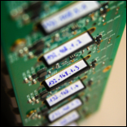
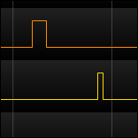
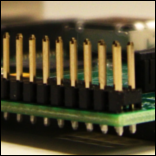
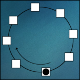

The project
- 
- 
- 
- 
Software
As this project aims to build a cluster, it should be able to perform distributed computations just as its bigger brothers. And since the cluster's first purpose is education it is important that it provides a way to monitor its state through an execution.
Pin toggling
The state-monitoring task is achieved using the Raspberry Pi's pins. As a simple example we built a logical ring: a set of interconnected devices pass around a token such that only one device at a time possesses the token (this can be used for instance to avoid collisions in network communications). Pin toggling becomes interesting in such a situation because a device can set a pin high upon token arrival and low when it is sent further. By simply connecting a logical analyzer or an oscilloscope to the pins, one can then easily see where the token is and when.
To perform such pin toggling operation, a small experiment was performed: comparing Java and C. The methodology was quite simple: toggling a pin as fast as possible in both languages and measure the time needed to perform one high/low cycle (i.e. the signal period).
The code used in the Java version relies on a library called Pi4J and allows easy access to the low-level peripherals of the Raspberry Pi, such as the GPIO pins we are interested into. The C code comes from a very good article by Pieter-Jan Van de Maele showing how to directly access these pins.
The results are irrevocable: while Java has an average period of 208.77 μs, C performs the same task in 80 ns. That is to say C is nearly 24'000 times faster than Java (in that particular task).
Distributed calculus
RaspberryPi32 performs distributed computations using MPICH, an implementation of the classical yet highly efficient Message Passing Interface (MPI). Simon J. Cox et al. provided a very good tutorial on installing MPICH on the Raspberry Pi. This instruction set can be found here. The outcome of this manipulation is that the cluster calculated pi, demonstrating that it has the abilities of a real supercomputer.
More details about the code used to perform pin toggling or how pi is computed can be found in the paper available on the 'About' page.
Back February 18, 2014